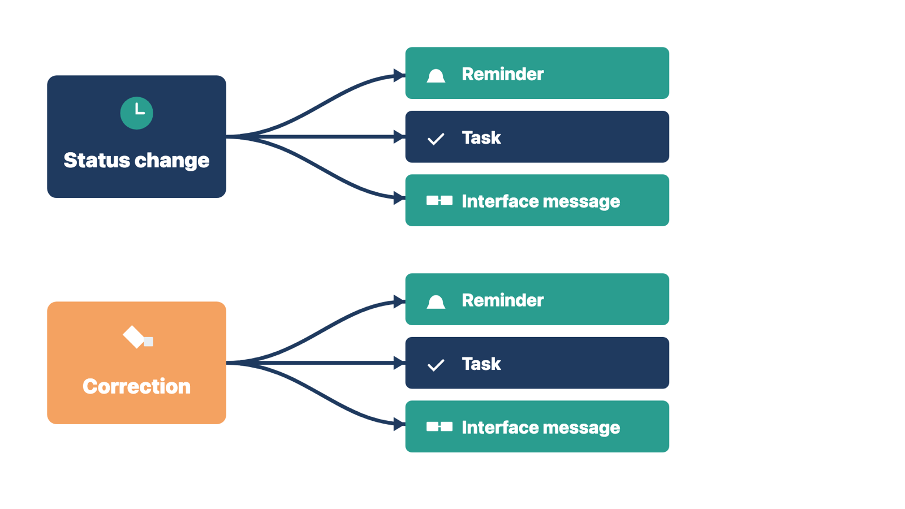
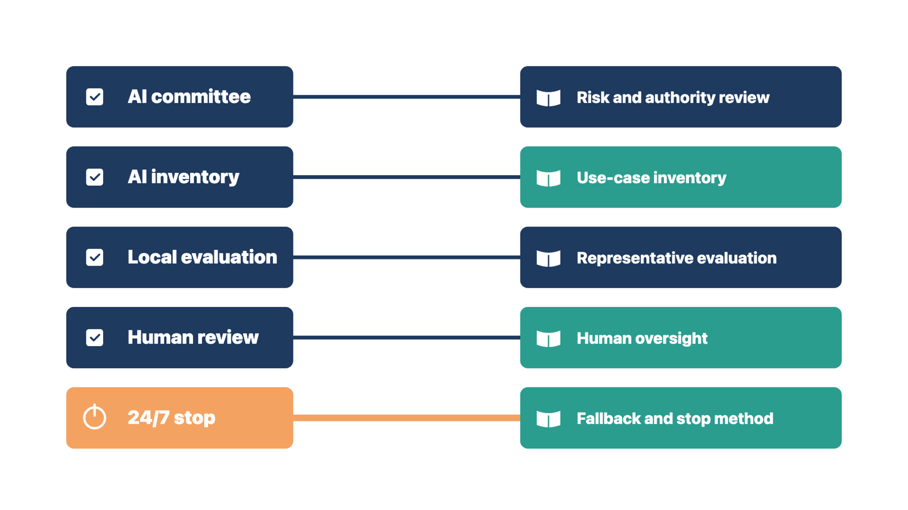

A rule that fires twice, fires late, or goes to the wrong queue can create hundreds of wrong tasks in a day. Small timing and routing errors grow fast.
For each trigger, rule, and action, test that:
Record how automations depend on each other. One status change may start several messages, tasks, or interface messages. A correction can start the chain again if you test only the first action.

Rule: Test every action a trigger starts, not only the first one.
Compare two cases. At Cedar Point, marking a lab result "abnormal" creates a nurse task and a patient message. You test both and find the message goes out before the nurse sees the result. At a pediatric clinic, staff correct a visit from "no-show" to "arrived," and a second no-show letter goes out. In both cases, the first action looked right, and the error was further down the chain.
Check yourself
Each kind of AI use has its own typical errors. A note tool fails differently from a scheduling assistant, so each needs its own test cases and limits.
An ambient documentation tool listens to a visit and drafts a note. Define:
Test for missing facts and for words credited to the wrong speaker. Test for negation errors, such as "no chest pain" written as "chest pain." Also test for medication and measurement errors, unrelated content, text carried forward from templates, and unsupported statements.
The tool creates a draft. The clinician stays responsible for the signed note. Unreviewed drafts must not start clinical, billing, or other high-impact work unless the clinic has approved and tested that step separately.
Some visits need extra care: behavioral health and psychotherapy visits, substance use disorder treatment, and confidential visits with minors. Ask whether the tool may be used in them at all, and how drafts and audio are protected. The privacy officer and the clinical lead decide. Module 4, "Plan for sensitive records," lists the questions to ask.
AI may summarize, pull out facts, translate, sort, or suggest routing. Qualified clinical leaders decide which decisions it may affect and what needs a person right away. Test incomplete, conflicting, urgent, out-of-scope, other-language, and misleading input. Make failed or uncertain routing visible.
AI may propose times, answer routine questions, or handle approved rescheduling. Test identity, permission, location, time zone, resources, urgency, cancellation, double booking, accessibility, and escalation. A chat tool must not decide clinical priority outside approved rules.
AI may sort work, find patterns, summarize rejected claims, or draft follow-up letters. Qualified billing, finance, compliance, or clinical reviewers approve the actions and content. Test unsupported advice, wrong source data, the wrong account, repeated actions, differences between payers, access, and audit.
Rule: An AI draft never replaces the signature or decision of the person who owns the work.
Compare two cases. At Cedar Point, an ambient draft says "chest pain" when the patient said "no chest pain." The physician corrects it before signing, and the signed note is the physician's. At a dermatology clinic, an AI tool drafts an appeal letter for a denied claim. The billing manager checks it against the payer's decision and approves it before it is sent. In both cases, the AI drafts, and the owner of the work decides.
Check yourself
A use that passed testing can get worse after release. Models change, workflows change, and staff stop checking closely.
Before go-live, assign:
Give users a way to report corrections and incidents without fear of blame. Hidden corrections make performance look better while risk grows.
Compare two signals. At one clinic, corrections fall slowly while review time stays the same, which may be real improvement. At another clinic, corrections fall the same week a "accept all" button appears and review time drops. That is a sign staff stopped checking. In both cases, read corrections together with how carefully staff review.
Rule: Assign a monitoring owner and pause thresholds before release, not after the first problem.
Check yourself
The clinic needs to show that its AI use follows a recognized safety practice. A short crosswalk shows where your work already covers it and where gaps remain.
The SAFER Guides (Safety Assurance Factors for EHR Resilience) are free self-assessment checklists from ONC. They help a clinic check that its EHR is used safely. The 2025 set has eight guides:
The Organizational Responsibilities guide now has a recommended practice on AI (practice 1.9). It says AI developers, EHR vendors, and healthcare organizations share responsibility for AI safety. The guide is a self-assessment tool, not a law. The client's safety or AI governance owner decides how to use it.
Use this crosswalk to show where this module's work covers each item. Give the completed crosswalk to the AI governance owner. Do not score the client's self-assessment yourself.
| SAFER 1.9 item (paraphrased) | Where this module covers it |
|---|---|
| A team from several fields, with AI expertise, reviews new AI requests and monitors AI in use | Run the risk and authority review; Monitor after release |
| The team keeps an inventory of AI in use: start date, version, responsible people, last review, authorized users and purpose, training-data source, outside testing | Build the use-case inventory; Collect decision-support source information |
| Test performance on local data before routine clinical use, then check regularly for drift, bias, or decline | Build a representative evaluation; Monitor after release |
| Patients and clinicians know, when possible, that AI is in use; consent where the clinic requires it | Run the risk and authority review (Authority); Ambient documentation |
| People who take responsibility review AI recommendations before they reach patients | Design human oversight |
| A log of AI use: version, date and time, patient, clinical user, input, and output | Keep a traceable record; Monitor after release |
| Training for clinicians on known and possible AI risks | Field assignment step 9; Module 5 and 6 training methods |
| Clear written steps and authority for IT staff to turn off AI, 24 hours a day, 7 days a week | Build the use-case inventory (fallback and stop method) |
| Downtime steps for work that depends on AI | Build a representative evaluation (service outage and fallback); Module 11 downtime planning |
| A clear process to report, study, and reduce AI safety issues | Monitor after release (correction and incident route) |

Two items need extra care. The first is the 24/7 stop. A stop that only the vendor's weekday support desk can perform does not meet it. Name the client's on-call role, write the steps, and test them before go-live. The second is the use log. Ask the vendor what the product logs and for how long. The client's privacy and security owners decide what logging is required.
The guide also says small clinics may choose to wait for better evidence before using AI. Waiting is a fair decision for the client to make. Record it like any other decision.
Rule: You fill in the crosswalk, and the client's governance owner does the self-assessment.
Compare two cases. At Cedar Point, your crosswalk shows the 24/7 stop covered only by the vendor's weekday desk. You mark it as a gap and give it to the AI governance owner. At a family practice, the governance owner reads your crosswalk and decides to wait before using AI. You record that decision like any other. In both cases, you supply the evidence, and the client's owner judges it.
Check yourself